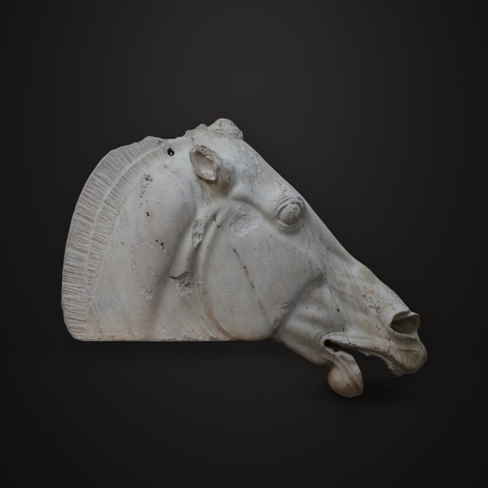

月神塞勒涅的马头
古典希腊 · 雅典 · 公元前438—前432年
Horse of Selene
讲解节选
这颗马头上，耳朵向后贴，嘴张着，鼻孔张大，眼睛鼓出来。
这是雅典帕特农神庙东山墙上的马头，常被叫作“月神塞勒涅的马头”，大英博物馆把它定在公元前四三八年到公元前四三二年，大理石，长约八十三厘米，高六十多厘米。它登记为菲迪亚斯设计；菲迪亚斯是雅典卫城营建计划的艺术负责人，也做过神庙里那尊用黄金和象牙做成的雅典娜大像。真正下凿的工匠是谁，不知道。
— 普通话讲稿 · Artvery
完整讲解约 3 分钟，在 Artvery App 里收听。粤语、台湾国语、内地普通话三种语音，馆内对准作品即可识别播放。
即将上架 App Store
App 即将上架，敬请期待。上架后免费下载，每座博物馆单独购买，一次购买永久使用。
作品信息
- 文化
- 古典希腊 · 雅典
- 年代
- 公元前438—前432年
- 尺寸
- 62.6 × 83.3 × 33.3 厘米
- 所在
- 大英博物馆 · 古希腊展厅
- 馆藏编号
- 1816,0610.98
大英博物馆参观攻略：必看名作和路线 · 大英博物馆中文语音导览